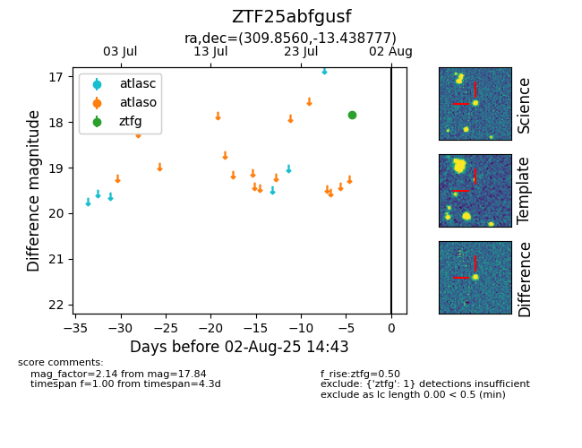

Target ZTF25abfgusf at 2025-08-02 14:43, see:
FINK: fink-portal.org/ZTF25abfgusf
Lasair: lasair-ztf.lsst.ac.uk/objects/ZTF25abfgusf
ALeRCE: alerce.online/object/ZTF25abfgusf
alt names
ZTF25abfgusf (ztf,fink)
coordinates:
equatorial (ra, dec) = (309.8560,-13.43878)
galactic (l, b) = (32.5671,-29.92791)
photometry
last atlaso=nan, ztfg=17.84
1 atlaso, 1 ztfg detections
